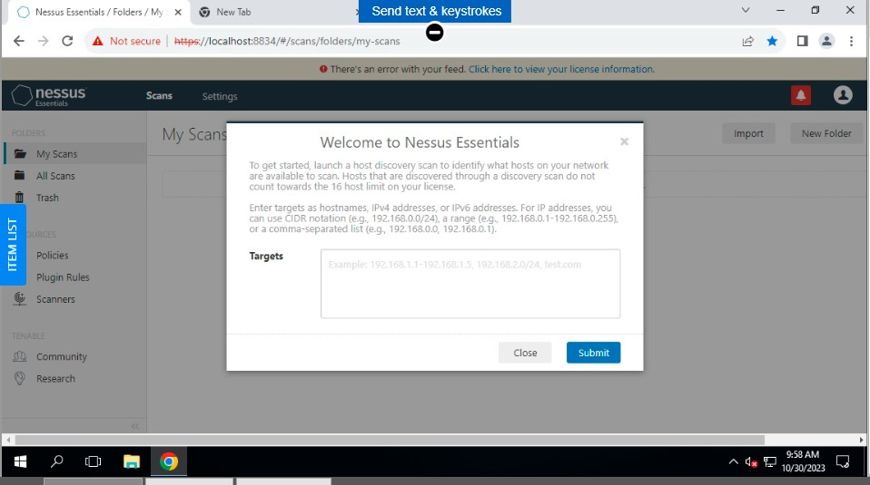
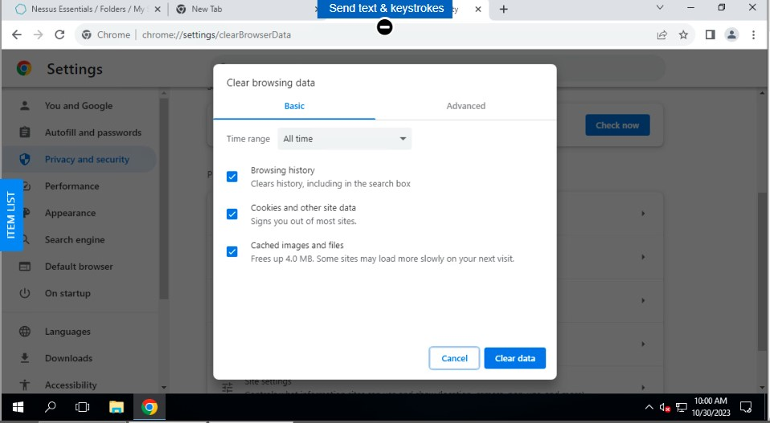
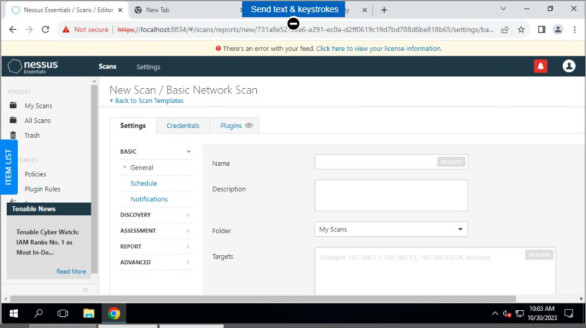
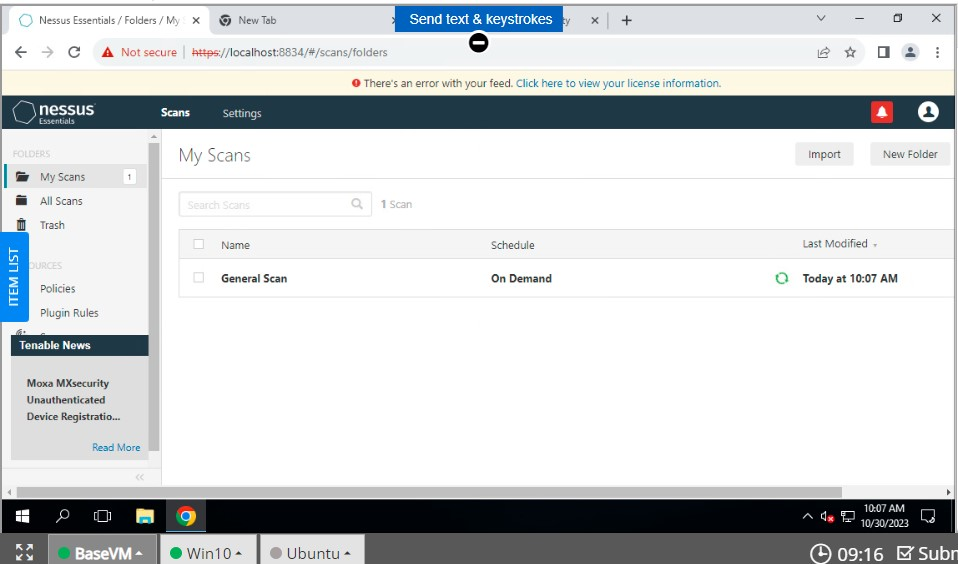
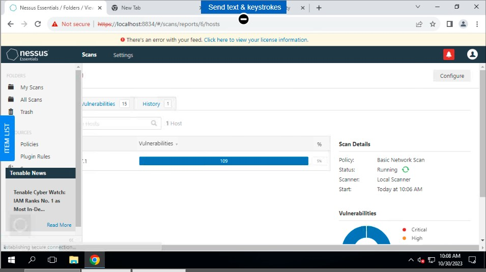
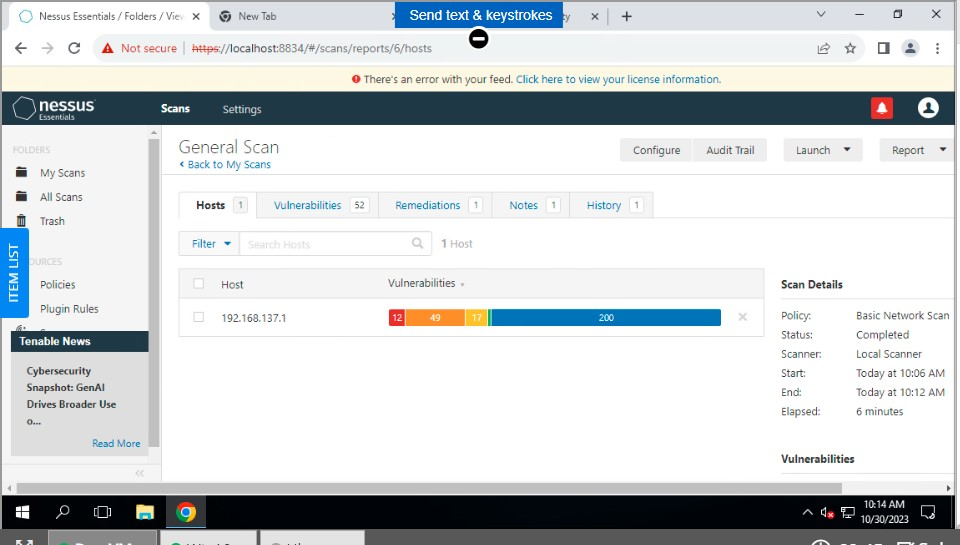
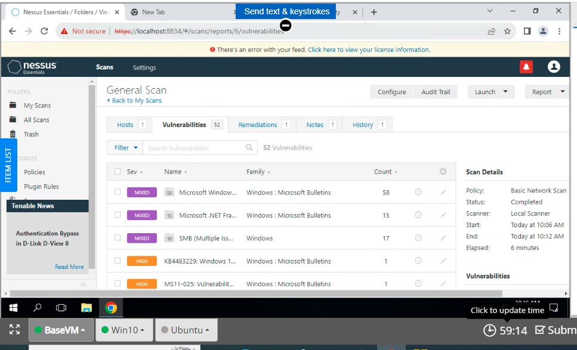
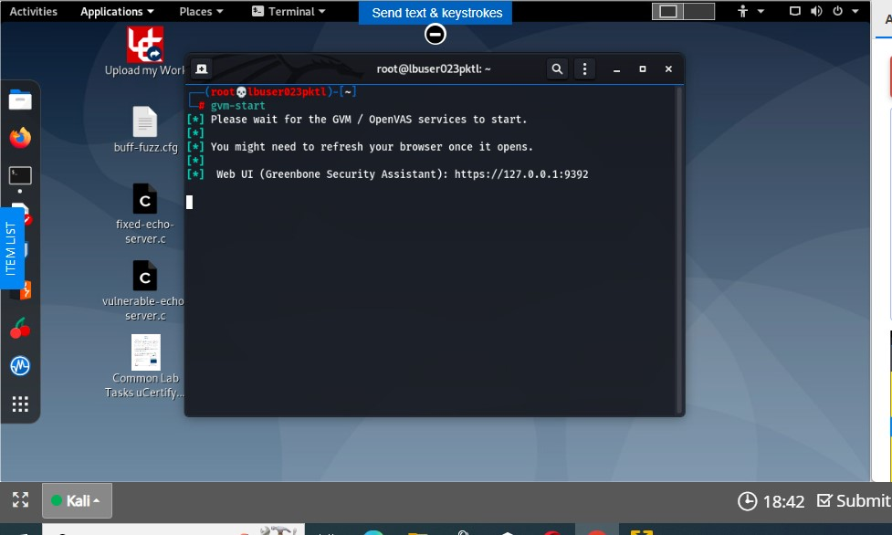
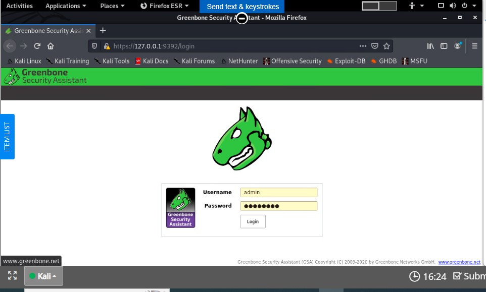
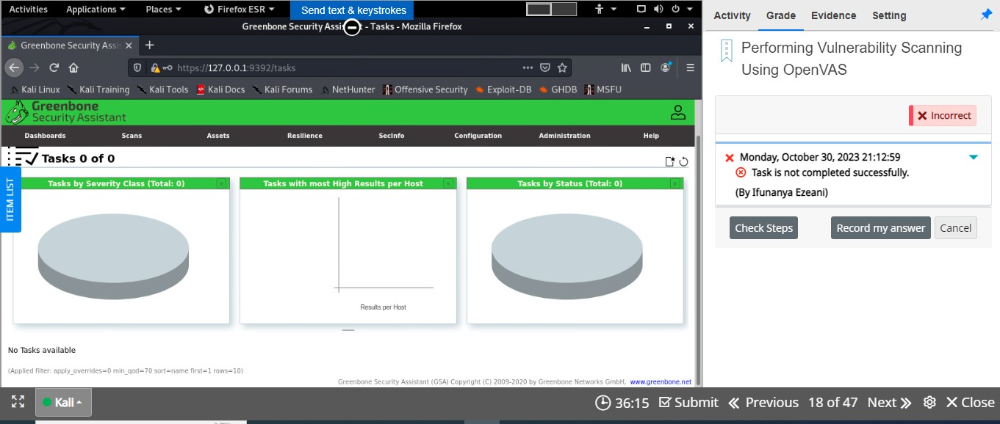

UCERTIFY SCANNING ACTIVITIES
uCertify is an online learning platform that focuses on providing courses and resources for individuals preparing for various IT certification exams. It offers interactive learning experiences, adaptive learning technologies, comprehensive courseware, and covers both vendor-neutral and vendor-specific topics. The platform caters to individual learners as well as organizations seeking professional development solutions.
This was when I was just logging in to Nessus to start my scanning activities
This was a step that required clearing all browsing data
In this step we were prompted to create a new scan
In this step, step 20, we were prompted to launch a general scan to check vulnerabilities
In this step, we were observing the results of the general scan, in order to see the vulnerabilities
In this step, we are viewing the completed scan results of the general scan.
In this step, we are observing the vulnerabilities of the genereal scan.
In this step, we are executing step 1, which is the gvm-start command.
In this step, step 3, we are setting up/observing the Greenbone secutiy assistant page.
This is a picture that shows an unsuccessful task. So this was still one of the tasks where we were performing vulnerability scanning using OPenVas. The problem encountered here that hindered me from having a successful task was the inability to see abd click on the save button. Without being able to click on the save button because it was not visible, I wasn't able to save changes that were being made after inputting details necessary for certain fields, thus resulting in an unsuccessful task.
